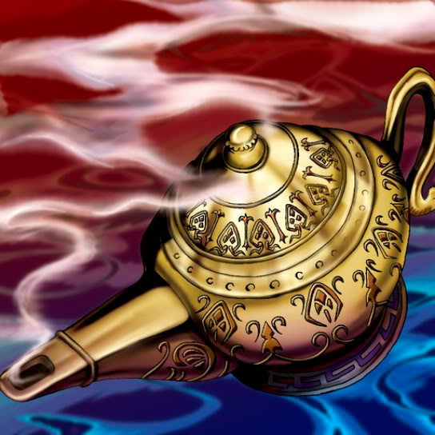

Mystic Lamp

Description: "When this card is flipped face-up, strengthens Lord of the Lamp by 700 points."
STATS
ATK: 400
DEF: 300DECK COST
Deck Cost per Card: 12EFFECT NOT IMPLEMENTED
Fusion List (43 Possible Fusions)
- Mystic Lamp + Akakieisu = Lord of the Lamp
- Mystic Lamp + Ancient Jar = Ushi Oni
- Mystic Lamp + Ancient Sorcerer = Lord of the Lamp
- Mystic Lamp + Blue-Eyed Silver Zombie = Magical Ghost
- Mystic Lamp + Fairywitch = Lord of the Lamp
- Mystic Lamp + Baby Dragon = Blackland Fire Dragon
- Mystic Lamp + Bat = Disk Magician
- Mystic Lamp + Blocker = Disk Magician
- Mystic Lamp + Bolt Penguin = The Immortal of Thunder
- Mystic Lamp + Bone Mouse = Magical Ghost
- Mystic Lamp + Curtain of the Dark Ones = Lord of the Lamp
- Mystic Lamp + Dancing Elf = Dark Elf
- Mystic Lamp + Djinn the Watcher of the Wind = Lord of the Lamp
- Mystic Lamp + Dragon Piper = Ushi Oni
- Mystic Lamp + Electric Snake = The Immortal of Thunder
- Mystic Lamp + Fire Reaper = Magical Ghost
- Mystic Lamp + Genin = Lord of the Lamp
- Mystic Lamp + Hurricail = Lord of the Lamp
- Mystic Lamp + Job-Change Mirror = La Jinn the Mystical Genie of the Lamp
- Mystic Lamp + Kaminarikozou = The Immortal of Thunder
- Mystic Lamp + Kamionwizard = Lord of the Lamp
- Mystic Lamp + Lady of Faith = Lord of the Lamp
- Mystic Lamp + Lucky Trinket = Lord of the Lamp
- Mystic Lamp + Masked Sorcerer = Lord of the Lamp
- Mystic Lamp + Mechanical Spider = Disk Magician
- Mystic Lamp + Mega Thunderball = The Immortal of Thunder
- Mystic Lamp + Morphing Jar = Ushi Oni
- Mystic Lamp + Nemuriko = Lord of the Lamp
- Mystic Lamp + Oscillo Hero #2 = The Immortal of Thunder
- Mystic Lamp + Petit Dragon = Blackland Fire Dragon
- Mystic Lamp + Phantom Dewan = Lord of the Lamp
- Mystic Lamp + Phantom Ghost = Magical Ghost
- Mystic Lamp + Pot the Trick = Ushi Oni
- Mystic Lamp + Right Arm of the Forbidden One = Lord of the Lamp
- Mystic Lamp + Sectarian of Secrets = Lord of the Lamp
- Mystic Lamp + Shadow Specter = Magical Ghost
- Mystic Lamp + The Bewitching Phantom Thief = Lord of the Lamp
- Mystic Lamp + The Immortal of Thunder = Kaminari Attack
- Mystic Lamp + Time Wizard = Lord of the Lamp
- Mystic Lamp + Wall of Illusion = La Jinn the Mystical Genie of the Lamp
- Mystic Lamp + Wicked Dragon with the Ersatz Head = Blackland Fire Dragon
- Mystic Lamp + Yamatano Dragon Scroll = Blackland Fire Dragon
- Mystic Lamp + Zombie Warrior = Magical Ghost